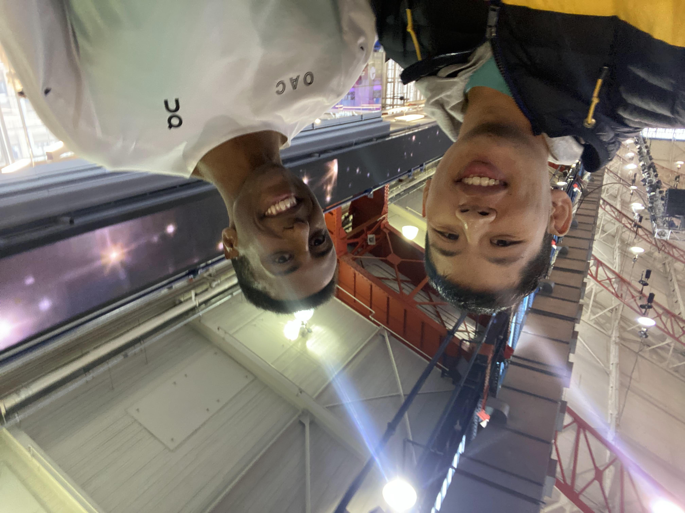
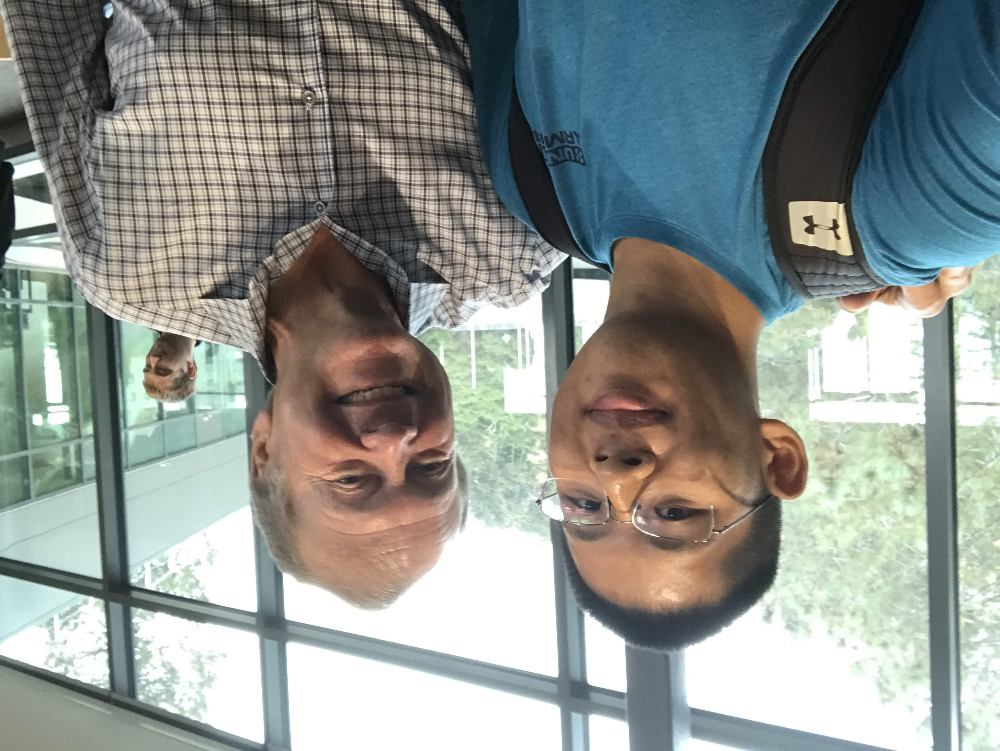

Carlos Alcaraz Novak Djokovic Hubert Hurkacz Ilya Ivashka Rinky Hijikata Nick Kyrgios |
Selfies
Starting in college, I started collecting pictures with people who I found interesting as well as people who have inspired me. You can check out some of the photos in my collection below!

 (🐐)
(🐐)

 Craig Engels  Galen Rupp  Rai Benjamin  Sinta Vissa  Ky Robinson Hobbs Kessler Bryce Hoppel Robby Andrews Josh Kerr Eric Holt Kyle Merber  Yared Nuguse |
Andre Iguodala Marshawn Lynch Kelly Olynyk |
 René Redzepi Levy Rozman - GothamChess Jelani Nelson - Minilek Carol Christ - 11th UCB Chancellor Alfred Spector - Former Two Sigma CTO  John Chambers - Former Cisco Systems CEO  Chris Chavez - Citius Mag Rob Dalto - Pursuit of Performance Billy Cvecko - Toad Lyfe 🸠Ryan Ng - Epicgenius |